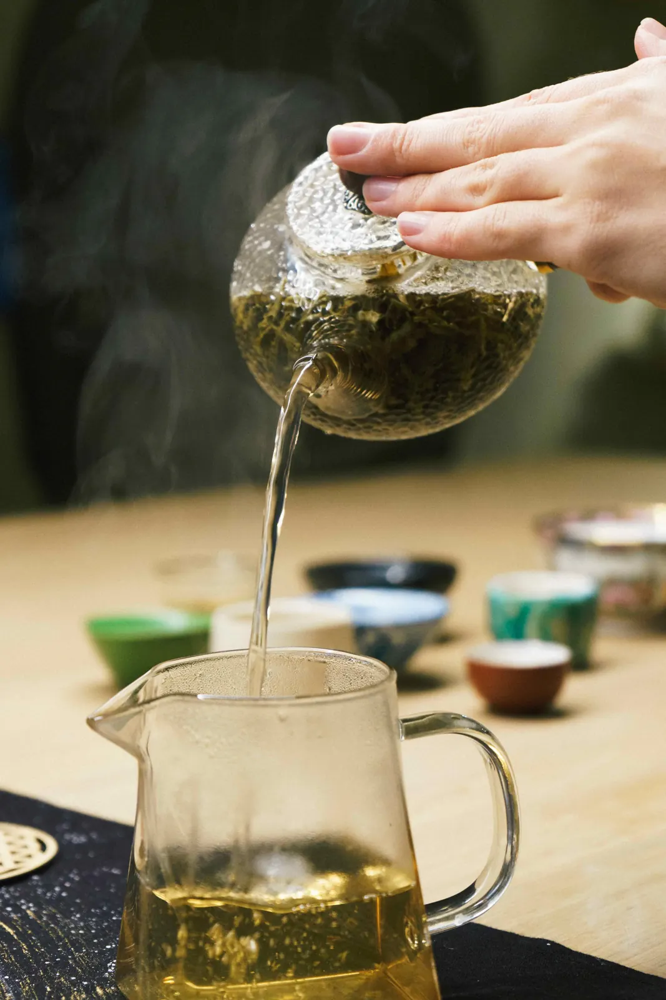
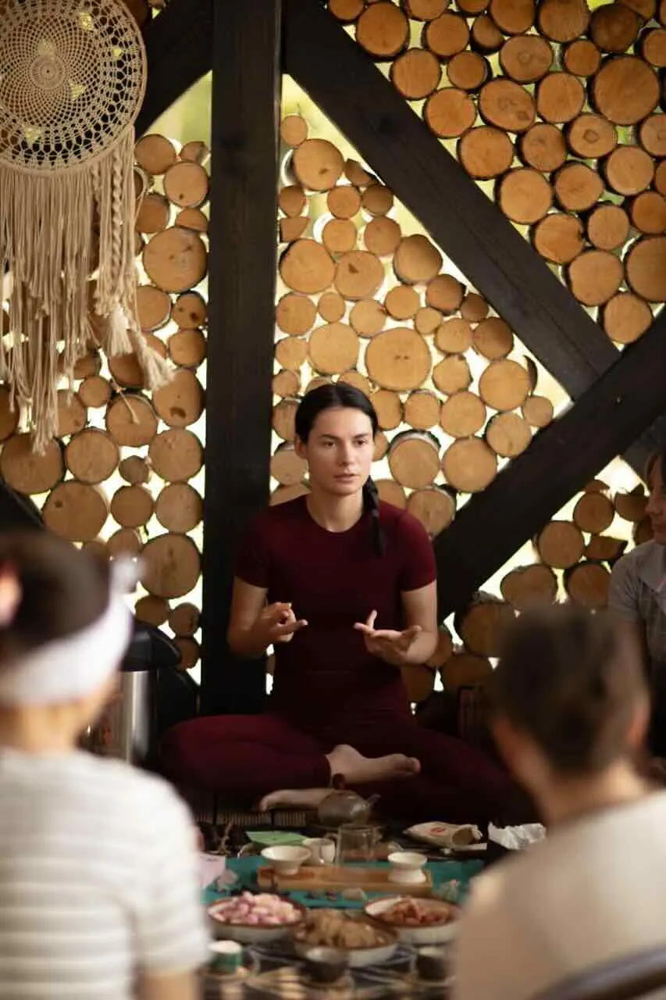

Настя
Перша церемонія на ретриті
- Було
- Цікавилась чайною культурою, але було недостатньо знань.
- Стало
- Пройшла навчання і вже провела свою першу чайну церемонію на ретриті.
Як освоїти чайну церемонію з нуля
Покроковий план, як вийти на дохід


02Сценарій другий
Знаєш, як обрати чай, підготувати посуд і простір.
Самостійно проводиш церемонію: зустрічаєш гостей, знайомиш із чаєм, заварюєш його та ведеш зустріч.
Маєш зрозумілу пропозицію: для кого церемонія, скільки триває та коштує.
Люди записуються й оплачують участь.
Ти розумієш, як розвивати цей напрям із фінансовим орієнтиром 1500 € на місяць.


Про мене
Провідниця до чайної майстерності, дослідниця та практик, авторка першого курсу про чайну церемонію українською.
років у чайній церемонії
учнів уже пройшли навчання
гривень за рік на чайних церемоніях у Польщі
формати: індивідуальні, групові та церемонії для організацій